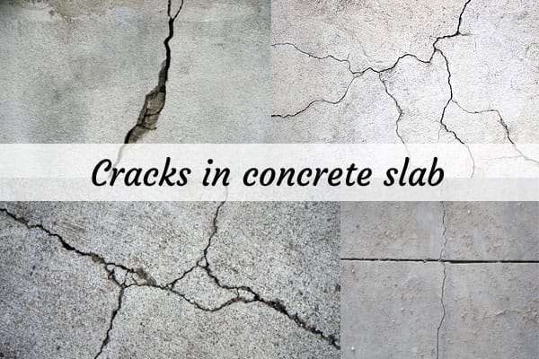
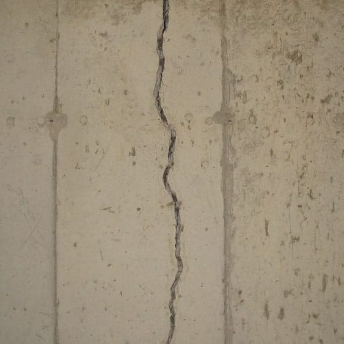
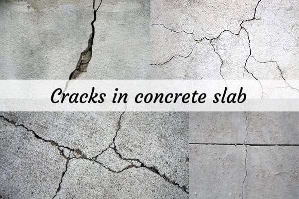
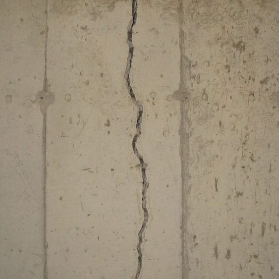
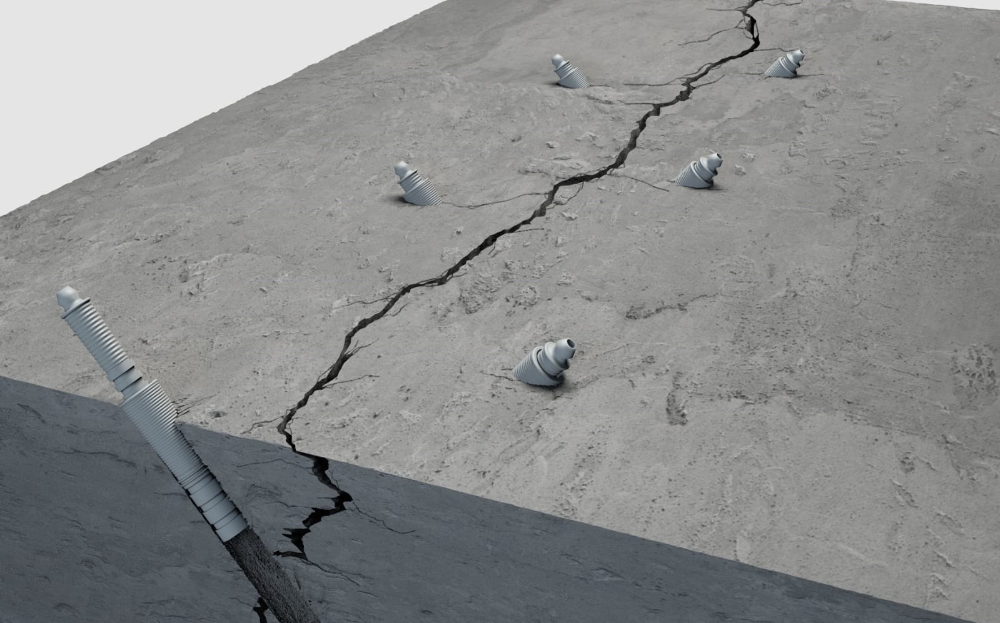
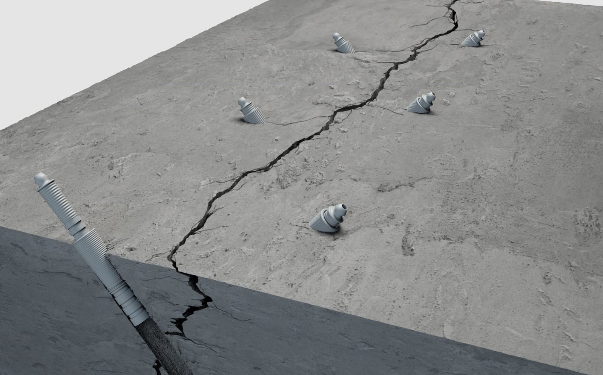

RCC Crack Repair
Structural crack repair to restore strength and prevent leakage.
Why RCC Crack Repair Is Important
Cracks in RCC structures allow water ingress that leads to corrosion of steel reinforcement and weakens the structure over time.
Materials Used
• Epoxy injection resin
• PU injection chemicals
• Crack fillers
• Protective coatings
Our 5-Step RCC Crack Repair Process
Step 1: Crack assessment and marking.
Step 2: Surface preparation.
Step 3: Injection grouting.
Step 4: Crack sealing.
Step 5: Final protection.
Project Image Gallery
 



 

Frequently Asked Questions
1. Are RCC cracks dangerous?
Yes, if untreated.
Yes, if untreated.
2. Permanent solution?
Yes.
Yes.
3. Time?
2–4 days.
2–4 days.
4. Structural strength?
Restored.
Restored.
5. Maintenance?
Minimal.
Minimal.